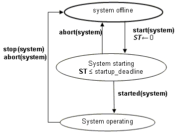
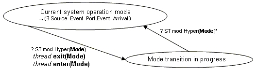

Previous
Next
Previous
Next 
| 12.3 System Operation |
System operation is the execution of a completely instantiated
and bound system. System
operation consists of different phases:
System startup: initialization of the execution platform
and the application system.
Normal operation: execution of threads and communication
between threads and devices.
System operation mode transition: mode switching of one
or more components with specified
mode transitions.
System-wide fault handling, shutdown, and restart.
System Startup
On system startup, the hardware of the execution platform
is initialized, the binary images of the
kernel address space are loaded into memory of each processor, and execution is started to
initialize the execution platform software. Loading into memory may take zero time, if the memory
can be preloaded, e.g., PROM or flash memory. Once initialized, each processor initiates the
loading of the binary images of processes bound to the specific processor into memory (see Figure
17).
Process binary images are loaded in the memory component
to which the process and its
contained software components are bound (see Figure 8). In a static process loading scenario,
all
binary images must be loaded before execution of the application system starts, i.e., thread
initialization is initiated. In a dynamic process loading scenario, binary images of all the processes
that contain a thread that is part of the current mode must be loaded.
The maximum system initialization time can be determined
as Processor_Startup_Deadline
+ max(Load_Time)
of all systems and processes + max(Initialize_Deadline) of all threads.
All software components for a process must be bound to
memory components that are all
accessible from every processor to which any thread contained in the process is bound. That is,
every thread is able to access every memory component into which the binary image of the
process containing that thread is loaded.
Data components shared across processes must be bound
to memory accessible by all
processors to which the processes sharing the data component are bound.
Thread initialization must be completed by the next hyperperiod
of the initial mode. Once all
threads are initialized, threads that are part of the initial mode enter the await dispatch state.
If
loaded, threads that are not part of the initial mode enter the suspend awaiting mode state (see
Figure 5). At their first dispatch, the initial values of connected out or in out ports
are made
available to destination threads in their in or in out ports.

Figure 17 System Instance States, Transitions, and
Actions
Normal System Operation
Normal operation, i.e., the execution semantics of individual
threads and transfer of data and
control according to connection and shared access semantics, have been covered in previous
sections. In this section we focus on the coordination of such execution semantics throughout
a
system instance.
A system instance is called synchronized if all components
use a globally synchronized reference
time. A system instance is called asynchronous if different components use separate clocks with
the potential for clock drift.
This version of the standard defines the semantics of
execution for synchronous systems. A
method of implementing a system may provide asynchronous system semantics as long as
system wide coordination protocols are in place.
In a synchronized system, periodic threads are dispatched
simultaneously with respect to a global
clock. The hyperperiod of a set of periodic threads is defined to be the least common multiple
of
the periods of those threads.
In a synchronized system, a raised event logically arrives
simultaneously at the ultimate
destination of all semantic connections whose ultimate source raised the event. In a synchronized
system, two events are considered to be raised logically simultaneously if they occur within the
granularity of the globally synchronized reference time. If several events are logically raised
simultaneously and arrive at the same port or at different transitions out of the current mode in the
same or different components, the order of arrival is implementation-dependent.
System Operation Modes
The set of all mode transitions specified for all components
of a system instance form a set of
concurrent mode transitions, called system operation modes (SOM). The set of possible SOMs
is
the cross product of the sets of modes for each component. That is, a SOM is a set of component
modes, one mode for each component of the system. The initial SOM is the set of initial modes
for each component.
The discrete variable Mode denotes a SOM.
That is, the variable Mode denotes a possible
discrete state that is defined by the mode hybrid semantic diagrams. Note that the value of Mode
will in general change at various instants of time during system operation, although not in a
continuous time-varying way.
The SOM transition is requested whenever a mode transition
in any component in the system
instance is requested by the arrival of an event. A single event can trigger a mode switch request
in one or more components. In a synchronized system, this event occurs logically simultaneously
for all components, i.e., the resulting component mode switch requests are treated as a single
SOM transition request.
If several events occur logically simultaneously and
are semantically connected to transitions in
different components that lead out of their current mode or to different transitions out of the same
mode in one component, then events are considered to have an implementation-dependent order
that determines the mode transition for the mode switch – resulting in the other events being
ignored.
After a SOM transition request has occurred, the actual
SOM transition occurs in zero time, if no
periodic threads are part of the old mode, otherwise, it occurs at the hyperperiod boundary of the
old SOM. This is indicated in Figure 18 by the guard on the transition from the
current_system_operation_mode
state to the mode_transition_in_progress state.
During that time, the system continues to operate in the old SOM and additional events that would
result in a SOM transition from the current SOM are ignored.
The rational-valued function Hyper(Mode) in Figure
18 denotes the hyperperiod of a SOM. The
hyperperiod is determined by the periods of those periodic threads whose
Synchronzied_Component
property is true, and that will deactivate or activate as part of the
mode switch, or that remain active but whose connections may change during the mode switch. If
this set of threads is empty, the mode transition is initiated immediately.
At the time of actual SOM transition, the transition
is performed to the new SOM that contains the
destination modes of the requested component mode switch(es).
System Operation Mode Transition
A runtime transition between SOMs requires a non-zero
interval of time, during which the system is
said to be in transition between two system modes of operation. While a system is in transition,
excluding the instants of time at the start and end of a transition, all arriving events that appear
in
transition edge declarations are ignored and will not cause any mode change.
At the instant of time the mode-transition-in-progress
state is entered, connections that are part of
the old SOM and not part of the new SOM are disabled. For data connections, this means that the
data value is not transferred into the in data port variable of the newly disabled thread.
At the instant of time the mode-transition-in-progress state is entered, data is transferred
logically simultaneously for all connections that are declared to be part of any of the component
mode transitions making up the SOM transition. For data connections, this means that the data
is
transferred from the out data port such that its value becomes available at the first dispatch
of the
receiving thread.
At the instant of time the mode-transition-in-progress
state is entered, connections
that are not part of the old SOM and part of the new SOM are enabled. For data connections, this
means that the data value of a transition connection is transferred into the in data port variable
of
the newly enabled thread. If the in data port of the destination thread is not the destination
of a
transition connection, the data value of the out data port of the source thread is transferred
into the
in data port variable of the newly enabled thread. If the source thread is also activated
as part of
the mode transition, its out data port value is transferred after the thread completes its activate
entrypoint execution.
When the mode-transition-in-progress state is entered, thread exit(Mode)
is triggered for all
threads that are part of the old thread and not part of the new thread. This results in the execution
of deactivation entrypoints for those threads (see Figure 5) as described in Section 11.
In addition, at the time the mode-transition-in-progress state is entered, thread
enter(Mode) is triggered for threads that are part of the new mode and not part of the old mode.
This permits those threads to execute their activation entrypoints (see Figure 5). In addition,
for
periodic threads this is immediately followed by their first compute entrypoint dispatch as
described in Section 11.
At the instant of time the mode-transition-in-progress state is entered, connections that
are not part of the old SOM and are part of the new SOM are enabled, i.e., connection
transmission occurs according to the connections that are part of the new SOM.
While the system is in the mode-transition-in-progress state, threads that are part of the
old and new SOM continue to operate normally. SOM transition requests as resulting from raise
events are ignored while the system instance is in the mode-transition-in-progress state.
The system instance remains in the mode-transition-in-progress state
until the next
hyperperiod. This hyperperiod is determined by the rules stated earlier. At that time, the system
instance enters current_system_operation_mode state and starts responding to new
requests for SOM transition.

Figure 18 System Mode Switch Semantics
The synchronization scope for enter(Mode) consists
of all threads that are contained in the
system instance that were inactive and are about to become active. The synchronization scope for
exit(Mode) contains all threads that are contained in the system instance that were active and
are
to become inactive. The edge labels enter(Mode) and exit(Mode) also appear in the
set of
concurrent semantic automata derived from the mode declarations in a specification. That is,
enter(Mode) and exit(Mode) transitions for threads occur synchronously with a transition
from the
current_system_operation_mode
state to the mode-transition-in-progress state.
System-wide Fault Handling, Shutdown, and Restart
Thread unrecoverable errors result in transmission of
event data on the Error port of the appropriate
thread, processor, or device. The ultimate destination of this semantic connection can be a thread
or set of threads whose role is that of a system health monitor and system configuration manager.
Such threads make decisions about appropriate fault handling actions to take. Such actions
include raising of events to trigger mode switches, e.g., to request SOM transitions.
Processing Requirements and Permissions
This standard does not require that source text be associated
with a software or execution platform
category. However, a method of implementing systems may impose this requirement as a
precondition for constructing a physical system from a specification.
A system instance represents the runtime architecture
of an application system that is to be
analyzed and processed. A system instance is identified to a tool by a component classifier
reference to an instantiable system implementation. For example, a tool may allow a system
classifier reference to be supplied as a command line parameter. Any such externally identified
component specification must satisfy all the rules defined in this specification for system instances.
A method of building systems is permitted to only support
static process loading.
A method of building systems is permitted to create any
set of loadable binary images that satisfy
the semantics and legality rules of this standard. For example, a single load image may be
created for each processor that contains all processes and threads executed by that processor
and all source text associated with devices and buses accessible by that processor. Or a
separate load image may be created for each process to be loaded into memory to make up the
process virtual address space, in addition to the kernel address space created for each processor.
A process may define a source namespace for the purpose
of compiling source programs, define a
virtual address space, and define a binary image for the purpose of loading. A method of building
systems is permitted to separate these functions. For example, processes may be compiled and
pre-linked as separate programs, followed by a secondary linking to combine the process binary
images to form a load image.
A method of building systems is permitted to compile,
link and load a process as a single source
program. That is, a method of building systems is permitted to impose the additional requirement
that all associated source text for all threads contained in a process form a legal program as
defined in the applicable programming language standard.
If two software components that are compiled and linked
within the same namespace have identical
component types and implementations, or the intersection of their associated source text
compilation units is non-empty, then this must be detected and reported.
A method of building systems is permitted to omit loading
of processor, device, and bus software in
a processor kernel address space if none of the threads bound to that processor need to access or
execute that software.
This standard supports static virtual memory management,
i.e., permits the construction of
systems in which binary images of processes are loaded during system initialization, before a
system begins operation.
Also permitted are methods of dynamic virtual memory
management or dynamic library linking after
process loading has completed and thread execution has started. However, any method for
implementing a system must assure that all deadline properties will be satisfied for each thread.
An alternative implementation of the process and thread
state transition sequences is permitted in
which a process
is loaded and initialized each time the system changes to a mode of operation in
which any of the containing threads in that process are active. This process load and initialize
replaces the perform thread activate action in the thread state transition sequence as well as the
process load action in the process state transition sequence. These alternative semantics may be
adopted for any designated subset of the processes in a system. All threads contained in a
process must obey the same thread semantics.